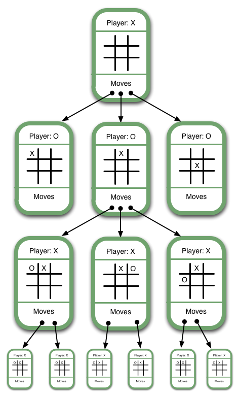

Ever since I've taken the Introduction to Artificial Intelligence (CSE 415) course here at UW, I've been heavily intrigued in game theory and it's many application. With applications ranging in philosophy, politics, economics, biology and of course, computer science, game theory has and will continue to play a big role in our every day lives. That being said, when the opportunity came in my Client-Side Web Development (INFO 343) course to produce a JavaScript based game, I didn't hesitate to waste the opportunity to utilize what I learned in my previous course about game theory to show how a simple game of tic tac toe can help illustrate this abstract concept.
*Disclaimer: I by all means am not an expert in this field. I created this solely because I wanted to share my passion for some of the concepts that will be mention.
We may not fully be aware, but our world is made up of many adaptive systems where agents within these systems react non-deterministically based on information about their surroundings. As a result, there's no concrete formulas or equations that are used to summarize and predict these actions. The study of game theory helps address these systems by taking in account the adaptive agents within these systems and how they are interdependent in affecting each other. In simple terms, game theory is the study of mathematical models and how they are used to represent the optimal decision-making of independent and competing agents in a strategic setting. The concepts of game theory provides us with a language to be able to defined, formulate and understand strategic situations.
To start things off, it makes sense to give some formal definition to the word game. In most everyday contexts, we think of a game as some sort of activity that may or may not have multiple people interacting in order to reach some sort of goal. In the case of explaining the concepts behind game theory, we are going to give a more formal definition to the word. A game is any interaction between multiple agents in which each agents' payoff is affected by the decisions made by others. This definition of game doesn't just apply to board games and video games, but can also be applied economics, where we may have multiple corporations in a oligarchical setting in which profit is determined by how these companies set prices for similar products.
Now that we have a solid definition of the word, game, we need to understand the difference between the types of games in game theory. Below we will briefly introduce the concepts of cooperative and non-cooperative game and how they apply to game theory.
In a cooperative game (or coalition game) the agents within a system are grouped in coalitions where they may have some common goals and thus work together to achieve those goals. Cooperative games are often used to analyze how coalitions form and how this joint actions within a coalition result in a collective payoff.
Imagine you and your friend are both in the process of raising money for a ticket to Disney World by making and selling cookies. You by yourself can only make 30 cookies in an hour. Your friend is a bit faster and makes 40 in an hour. But when the both of you join forces to make cookies, together you're able to make 90 cookies in an hour. You've decided that it's worthwhile to join forces to make and sell cookies since you both have similar goals.
Cooperative game theory studies and analyzes how you and your friend cooperated and decided to join a coalition in order to reach a common goal. Cooperative game theory also helps provide a model to distribute payoff based on contributions. In hopes of keeping this explanation short, I won't be discussing any of the strategies used for payoffs of coalitions.
In a non-cooperative game, the agents within a systems are not allowed to form any alliance and thus there's constant competition between individual agents. Unlike cooperative game theory, non-cooperative game theory typically is concern with the analysis of strategic choices and how these choices reflect in some payoff for a particular agent.
Let's take our example from above but in this case, there's only one ticket left to Disney World and you both want it. Instead of forming some form of coalition, the two of you are in competition to raise money faster than the other. Your decision to price your cookies will be dependent on that of your friend and vice versa. You both don't want to overprice your product but you still need to be able to price it in a way that maximizes profit and thus gives you the advantage when it comes to buying that last ticket.
Non-cooperative game theory studies the process of how you and your friend will decide how to price the cookies in order to maximize your own profit. The idea behind non-cooperative game theory is that the details of the order and time of agent's choices are crucial to determining the outcome of the game.
For this project, I will be using the game Tic-tac-toe, also commonly refer to as "Noughts and Crosses" to demonstrate some of the concepts behind game theory. Tic-tac-toe is a game for two players, in which these players take turns marking the spaces in a 3x3 grid. The player who succeeds in placing three of their marks in a horizontal, vertical, or diagonal row wins the game. Although tic-tac-toe becomes trivial after several iterations of playing, the concept of the game serves as a great example into explaining how some of the fundamental techniques in game theory can be applied elsewhere. As you can see, each game of tic tac toe can be considered an adaptive system, where the agents within this system are reacting and acting upon the decisions made by one another in order to reach an objective.
Using what we discussed above about the types of games in game theory, what would Tic Tac Toe fall under? If you were to say non-cooperative game, then you're absolutely correct! The objective of Tic Tac toe is to beat your opponent through a series of optimal decisions. Since Tic Tac Toe is strictly competitive, it actually falls under what is so called a zero-sum game. A zero-sum game in game theory is a way to mathematically represent a situation in which each agent's gain or loss is balanced by other agents' losses or gains. Whatever one agent gains, the other loses and thus the system is constantly at equilibrium as gains and loses will result in a sum of zero. In the sense of Tic Tac Toe, for one agent to win, the other has to lose (or in many cases tie, but then the system is still at equilibrium).
In all instances of working with systems where game theory is being utilized, it is necessary to be able to represent the systems in well-defined models. These models must be able to incorporate information about the agents within the system, the current environment in which these agents are in, the information and action available to each agent and the result of these actions in regards to the overall objective of the game. It's important to lay out these fundamental definitions when formulating a problem in game theory because it serves a means to understand the scope of the problem and why certain decisions are made. These criteria can be formalized into the following elements:
The agents in our system would be those that are participating in our game of Tic Tac Toe. Therefore we have two agents, the user and the AI. In order to manage the agents within my code, I had to created several objects to store information about the agents that were initialized through the modal setting option. I made several utility function throughout my object in order to ease the process of retrieving and maintaining the state of these agents
Below is a code snippet that shows how I am able to store information about the agents within the game:
let agents = { userIcon: '', aiIcon: '', init: function () { this.userIcon = $('input[name=icon]:checked').attr('id')[0]; this.aiIcon = this.getOpponent(this.userIcon) }, getOpponent: function (player) { if (player === "X") { return "O"; } return "X"; }, getPlayerIcon: function (player) { if (player === "user") { return this.userIcon; } return this.aiIcon; }, };
To represent the states of the problem, I had to create a model that allows us to imitate that of a tic tac toe turn. This would subsequently
result in a model that contains information about the current board, the current turn as well as any other necessary information relevant to
the current state of the game. To represent the board, I used a 2D array where each index contains an array that represents the row on a
tic tac toe board. The position's indices are based on a (X,Y) coordinate system where the top left most position corresponds to a
value of (0,0). X's and O's were placed onto the game board based on when they were inserted during the game.
The board is initially initialized with "-"which corresponds to blank spots on the board.
For the sake of keeping this as abstracted as possible, I've remove code within my functions below. If you're interested in viewing the implementatio, I would encourage that you visit the repository source code [insert repository after cloning]. Below is a code snippet of how I formulated the state of the game :
let gameState = { sessionTime: 0, currentTurn: '', gameBoard: [], openPositions: [], winningCombos: [], init: function () { this.currentTurn = gameSetting.startingTurn; let initialState = this.createInitialGameState(); this.gameBoard = initialState.board; this.openPositions = initialState.openMoves; this.winningCombos = this.getWinningStates(); }, createInitialGameState: function () { // Created an object that contains an array of the initial board as well // as the remaining open positions on the board }, getWinningStates: function () { // Given the initial dimensions of the board, calculate and return an array // that contains all the possible winning combinations } };
In the rules defined by the game, valid moves are only allowed where there's an empty position within the current game board for a marker to be placed at. Thus, you need a function to check whether a position is empty, prior to carrying out some action. For our game, a function that checks whether a position is open is relatively straight forward, given that we are already keeping track of the current state of the game. To make the process much easier for myself, I created an operator function that utilizes the rules set forth by the game and returns an array of legal game boards for that current state.
Below is a snippet of the getSuccessors function:
function getSuccessors(board, nextMove) { let successors = []; for (let i = 0; i < dimension; i++) { for (let j = 0; j < dimension; j++) { let boardTemp = JSON.parse(JSON.stringify(board)); if (boardTemp[i][j] === "-") { boardTemp[i][j] = nextMove; successors.push(boardTemp); } } } return successors; }
The actions in our game are made when an agent decides to place a marker at a position on the game board. If the actions is legal, verified by the operator, then the action can be carried out and thus will change the internal and external state of the game. Since the action of the user is triggered through the user interface, we have to change the internal state of the game. Actions generated by the AI is done internally and uses an algorithm called minimax (which will be discussed below) and thus must result in a change in the user interface.
Below is a code snippet that manages the action taken by the user and AI and changes the internal and external state of the game:
function makeMove(position) { let pieceId = "#position-" + position; let arrayPosition = getBoardPosition(position); gameBoard[arrayPosition.x][arrayPosition.y] = getPlayerIcon(currentTurn); // Changes internal game board removeFromArray(openPositions, position); if (getPlayerIcon(currentTurn) === "X") { if ( currentTurn === "user") { currentTurn = "ai"; } else { currentTurn = "user"; } $(pieceId).append($('<span class="fa fa-times times-symbol"></span>')); // Changes external game board $(pieceId).off('click'); } else { if ( currentTurn === "user") { currentTurn = "ai"; } else { currentTurn = "user"; } $(pieceId).append($('<span class="fa fa-circle-o circle-symbol"></span>')); // Changes external game board $(pieceId).off('click'); } }
When making our decision on a particular action, we want to be able to weigh the effectiveness of said action based on the consequences of that action. We need a way to know the benefits of each action relative to each other in order to make the best decision. This requires that we have some way to capture relative effectiveness. This is typically best done so through a function that is able to capture the state of game after an action has been carried out in order to measure the effectiveness of that action.
In my case, I used a standard evaluation function that measures the effectiveness of a board relative to one of the three terminal state in our game; the AI winning, the user winning and a tie. I awarded game boards that resulted in the AI winning, 10 points, states that resulted in the user winning, -10 points and those with ties, 0.
Below is a snippet of the implementation of the scoring function:
if (gameStatus !== false) { switch (gameStatus) { case 1: return { score: 10 - depth, board: board }; case 0: return { score: 0, board: board }; case -1: return { score: -10 + depth, board: board }; } } }
Now that we have been able to formulate the current system in which we are in, we can now discuss how we are able to utilize these formulations in order to make optimal decisions. To be able to make the most optimal decision, we need to somehow know the effectiveness of our actions. In formulating our problem, we mentioned an evaluation function as a means to measure the effectiveness of certain actions. With there being so many combinations of actions that can occur within a system, we need to be able to generate all of these potential states that are a result of these actions and then evaluate them on their effectiveness. To do so, we will be introducing the MiniMax algorithm.
The MiniMax algorithm is a backtracking algorithm that utilizes recursion to be able to explore potential states in order to find the most optimal move for a particular agent. This is done so by assigning what are called min and max to the corresponding agents within the system. The idea behind MiniMax is that while generating potential states, we are utilizing a scoring function that also assigns a value to those newly generated states in order to measure their effectiveness. The agent assigned to min will want to minimize the score from an evaluation function, while max will do it's best to maximize the score. Due to the recursive nature of this algorithm, we are able to continually generate potential states until no more actions are allowed. This will then invoke a backtracking process that will be able to return the most optimal state based on our evaluation function.
Below is an image of the recursive process that generates actions in the MiniMax algorithm.
Tic Tac Toe Game Tree from Swarthmore CS
Utilizing the MiniMax algorithm, we are able to analyze potential actions now and see how they play out in the future. This idea is incredibly powerful in the sense that it helps illustrate the process behind generating an optimal decision in a strategic setting.
Although there is a lot more to game theory than what was mentioned, I hope that this serves as a solid foundation into some of the concepts behind game theory. These concepts extends beyond simple games and artificial systems. Due to the nature of how our society is shaped, decisions play an essential role in everything we do. Being able to understand the context surrounding our decisions allows us to act intelligently in order to achieve some kind of goal. I would encourage anyone who is interested in these concepts to further explore the domain as a lot of the underlying principles behind game theory parallels that of how our world works.
I am currently in the process of optimizing my code in order to support Tic Tac Toe games of 4x4 and 5x5 dimension boards. Currently my code will still work but the time that it takes to generate the next optimal state takes too long and thus is ineffective and derails the game experience. I have thus disabled those options until a future update. I have done a bit of additional research and planning on steps that are needed to be able to optimize my code. Below are some of the techniques that I will attempt to implement in order to be able to cut down my runtime.
For any suggestions and or comments, feel free to reach me here
Follow my progression at { insert repo after cloning it as my own repo }